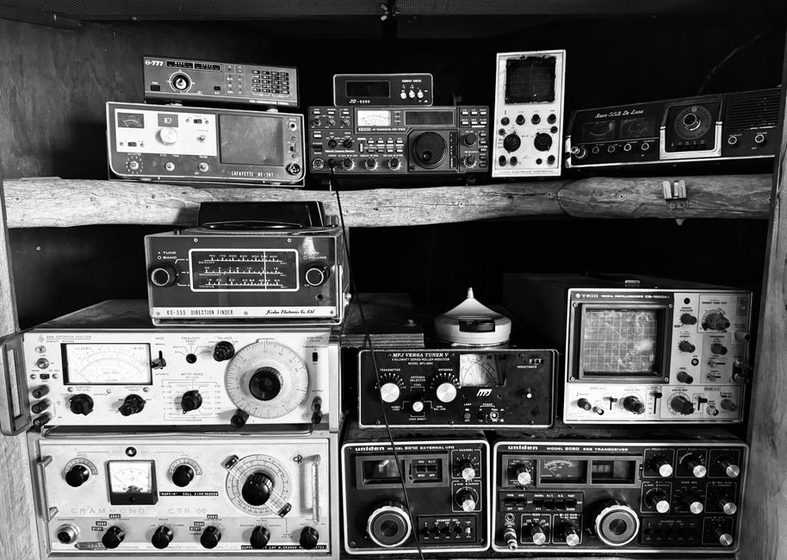

Reading the Noise Floor Before You Blame the Radio
Most disappointing sessions trace back to the noise floor, not the set. A walkthrough of telling the two apart.

Three nights running, the 31 metre band read like static with a caption. The S-meter sat at S7 with nothing tuned in — a noise level that would make anyone doubt the receiver rather than the room around it. It would have been easy to call the front end deaf and start pricing an upgrade that wasn't needed. What had actually happened was a neighbor's new solar inverter going into service that week, roughly forty metres east, spraying broadband hash across most of the shortwave spectrum. The radio was fine. The floor it was reading against had moved. Telling a genuinely insensitive receiver apart from a genuinely noisy location is a five-minute test, and it's worth running before any other conclusion gets written into the log.
The Two Floors
Every receiver is working against two separate noise floors, and conflating them is the most common misdiagnosis on this desk. The first is internal — the thermal and design-related noise generated inside the receiver itself, set largely by its front-end circuitry and mostly fixed once the unit leaves the factory. The second is external — whatever noise arrives at the antenna terminal from the surrounding environment before the receiver ever gets a say in the matter. On all but the quietest rural properties, the external floor sits well above the internal one, which means the receiver is rarely the limiting factor people assume it to be. A weak signal buried in noise is usually buried in noise that walked in through the wire, not noise the set manufactured on its own.
Where the Noise Actually Comes From
Local noise floors tend to trace back to a short list of repeat offenders, most of them switching electronics that were never designed with a shortwave listener next door in mind:
- Switching power supplies — phone chargers, laptop bricks, and LED drivers left plugged in around the house
- Rooftop solar inverters and charge controllers, which can spread noise across a wide swath of the spectrum
- Powerline network adapters, which deliberately push signal through household wiring
- Dimmer switches and some LED light fixtures, especially older or budget models
- Nearby computer monitors and poorly shielded chargers left near the operating position
Any one of these, sited close enough to the antenna, can raise the local floor by several S-units — enough on its own to bury a signal a receiver would otherwise handle without difficulty.
The Antenna-Disconnect Test
The test itself takes less time to run than to explain. Note the S-meter or noise reading with the antenna connected and nothing tuned in — that's the working floor for the session. Then disconnect the antenna, or switch to a dummy load if the receiver has one, and note the reading again. If the floor drops sharply once the antenna is out of the circuit, most of what was showing up a moment ago arrived through the wire, not from inside the set. If the floor barely moves, the receiver's own internal floor is closer to what's being measured, and the problem — if there is one — sits somewhere else, in the antenna or its match, as covered in Twelve Metres of Wire, and What It Actually Hears.
A meter reading is a fact. What it means is a guess until one variable has been changed at a time.
Repeating this at the same hour on a few different evenings tells more than running it once. A floor that jumps at nine and settles by midnight points toward a specific device on a timer, not a permanent property of the location.
Matching the Symptom to the Cause
A single test result is a data point, not a verdict. The table below is a rough map from what shows up in the log to where to look next, built from a few seasons of chasing false alarms on this desk.
| Symptom | Likely cause | Next check |
|---|---|---|
| Floor rises after dusk, same bands each night | Ambient RFI from evening-use devices nearby | Run the disconnect test at that same hour |
| Floor is unusually high across every band at once | A broadband local source (inverter, switching supply) | Walk a battery portable around the property to find where it peaks |
| Floor stays low, but known stations aren't audible | Antenna orientation or match, not noise | Check the antenna setup before the receiver |
| Floor spikes only at certain times | A timer-driven device (pump, irrigation, charger cycle) | Log the exact start time across a few sessions |
| Two receivers side by side show different floors | A genuine front-end difference between sets | Compare only with antenna and location held equal |
Reading the Log, Not Just the Meter
A single evening's reading, good or bad, doesn't settle much on its own. What separates a real diagnosis from a hunch is doing this over a stretch of sessions and writing both numbers down — antenna connected, antenna disconnected — rather than trusting a general impression of how the band "felt." The habit described in A Logbook That Lies Less applies here directly: a log that records only what was heard, without also recording what the noise floor was doing, ends up crediting or blaming the wrong thing months later when someone tries to make sense of the pattern.
Three-minute check before writing off a session
Worth running before the receiver takes the blame for a noisy evening.
Note the floor
With the antenna connected and nothing tuned in, write down the S-meter or noise reading.
Disconnect and compare
Pull the antenna, or switch to a dummy load, and note the reading again.
Log the gap, not the guess
Record both numbers and the time. A pattern across sessions says more than any single reading.
What Actually Changed on This Desk
In this case, the fix wasn't a new receiver. The wire ran roughly parallel to buried electrical service for about six metres near the fence line, and moving that run three metres further out dropped the local floor by close to two S-units on the bands most affected — a real difference, though the floor never returned all the way to what the disconnect test showed on the quietest recorded night. Some of that remaining gap is likely coming from sources further off that one antenna move can't reach. The receiver, tested the same way before and after, measured identically both times.
This entry describes what one desk observed while sorting a noisy evening from a genuinely limited receiver. Local noise sources vary by neighborhood, season, and even time of day, and the disconnect test is worth repeating occasionally rather than treated as a one-time verdict.